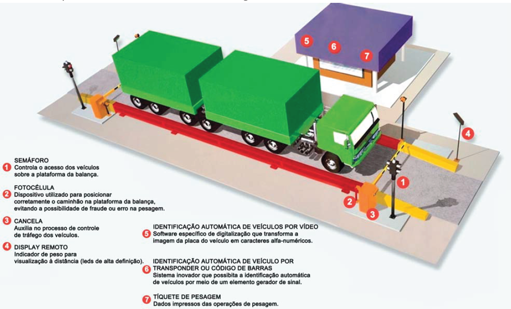

Em determinada rodovia, a pesagem obrigatória de caminhões é realizada por balanças automatizadas. Além da plataforma e do indicador como itens básicos da balança rodoviária, o sistema de pesagem é constituído por diversos componentes, conforme ilustrado na figura abaixo.
Balança para pesagem do caminhão.
Disponível em: http://balancasacores.com.br. Acesso em: 29 jul.2014 (adaptado).
No momento da pesagem, o caminhão desloca-se por uma pequena inclinação e acomoda-se para que a medição seja realizada e registrada. Assim, do solo até a acomodação do caminhão, o sinal aplicado à balança pode ser aproximado por um degrau unitário.
Suponha que o caminhão de uma empresa de transporte de cargas tenha passado por duas balanças em uma rodovia com pesagem automatizada. O gerente da empresa constatou que o caminhão havia sido multado na segunda balança, após ter sido liberado pela primeira. Para recorrer da multa, solicitou-se parecer de um perito com relação ao sistema de controle de pesagem das balanças. Para análise e emissão do laudo, o perito recebeu do fabricante da balança a sua função de transferência, representada por:
Suponha, ainda, que a empresa responsável pela manutenção do sistema de aquisição de dados informou ao perito que, na primeira balança, o peso é adquirido 3 s após a entrada do caminhão e, na segunda balança, 1,2 s após a entrada do veículo. Considere que, no percurso entre as balanças, não houve variação de carga no caminhão, que as diferenças causadas pelo consumo de combustível são desprezíveis e que o peso é fixado após a acomodação do sistema.
Com base na situação proposta, faça o que se pede nos itens a seguir.
Considere as seguintes informações complementares:
Função de transferência normalizada de um sistema de 2º ordem:
Sobressinal máximo:
Tempo de pico:
Tempo de acomodação: